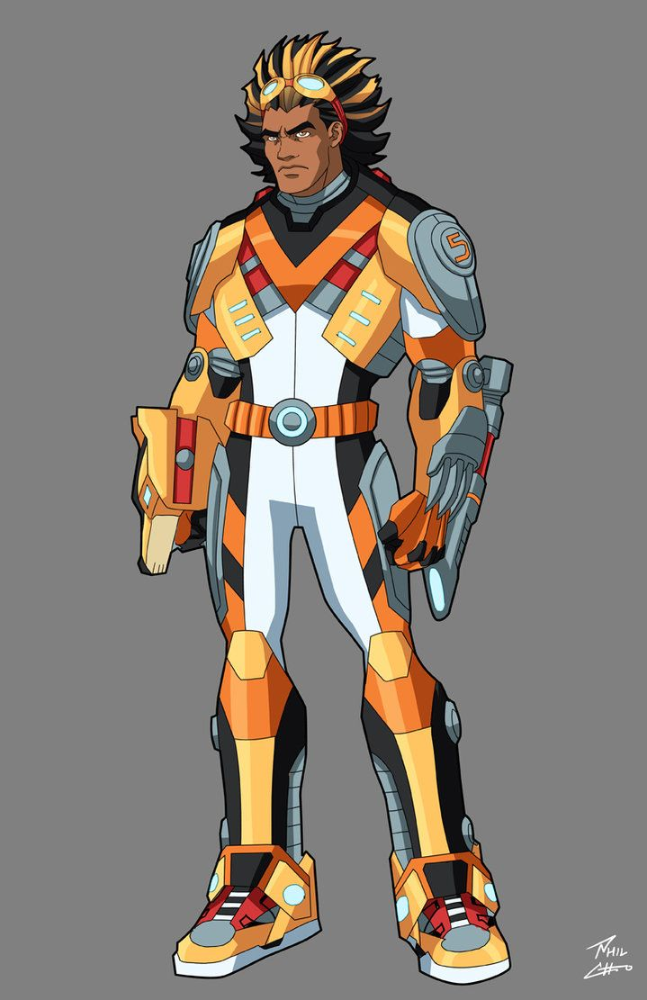

Team Profile
The Jaunty Lion and Judith are a duo known as much for their powerful ability to win over anyone they come in conflict with. JL possesses a majestic, golden-maned custom-made couture suit, with a stunning king's crown that grants him enhanced strength and a "Sonic Roar." His sidekick, Judith, is an unsuspecting secretary but secret programmer who helps JL with his missions by using advanced hologram technology to distract opponents.
Jaunty Lion Costume Concept Art
The Villains Villa
-
Mr. Gloomfield
- Major Power: Splash potion creation that can temporarily grant invisibility.
- Minor Power: Makes the floor behind him slippery as he walks.
-
Dr. Trudith Willabough
- Major Power: Temporary truth serum that forces people tell the truth for 10 minutes.
- Minor Power: Makes everyone's in a 50ft range cough out smoke.